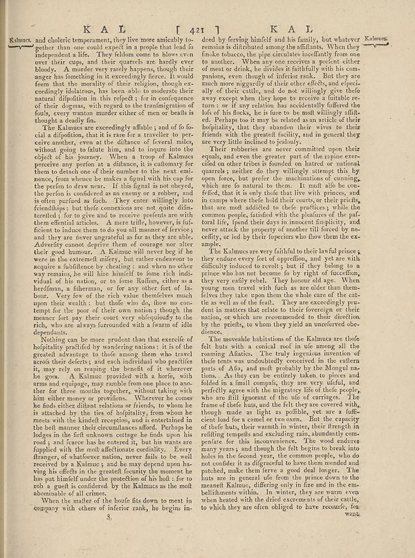

Source · scan and Parse blocks
Layers 3

Parse text by block reading order
- 0Page-headerKAL [ 421]
- 1TextKalmcs, and cholerie temperament, they live more amicably to-gether than one could expect in a people that led to independent life. They felaina come to blows even over their cups, and their quarrels are hardly ever bloody. A murder very rarely happens, though their anger has finding in it exceeding forces. It would feem that the morality of their religion, though ex-ceedingly delaltance, has been able to moderate their natural difjedition in the effect; it for in confignence of their dogmas, with regard to the transmigration of fouls, every reason murder either of men or beats is thought a deadly fin.
- 2TextThe Kalmus are exceedingly affable; and of fo-cali a algorithm, that its rare face a traveller or pe-ceive another, even at the difference of federal rules, without going to falute him, and to injure into the object of his memory. When I troup of Kulinar preserve my perform at a dilanze, it is customary for them to detach one of their number to the next emi-mones, from whence the idea a great with his cap for the perfor to the man. If this signal is not obeyed, the perfon is considered as an enemy or a robber, and is often purified as facts. They enter willingly into friendships; but these conclusions are not quite the timeted; for to give and to receive prendents are with them offential articles. A more trifle, however, istif-ficient to induce them to do you all manner of ferries; and they are never ungrateful as far as they are able. Adverify cannot deprive them to courage nor alter their good humor. A Kulinar will never beg if he were in the extreme miliers, but rather endeavor to support a faithleness by beating; and when no other way remains, he will fear himself to force rich individual of his nation, or to form Rullas, ciber as a herdifnn, a fisherman, or for any other first of la-bour. Very few of the rich value themselves much upon their wealth; but those who do, flow on con-tempt for the poor of their own nations, though the meaner fortely their court, very inforiously to the rich, who are always surrounded with a warm of idle dependents.
- 3TextNothing can be more prudent than that exercife of hospitality pretplied by understanding: is it so the greatest advantage to those among them who travel heroés their defers; and each individual who protatles it, may rely only keeping the bundle of it wherever he goes. A Kulinar provided with a hard, with arms and equipage, may enable from one place to anchor for three months together, without taking with him either money or problems. Wherever he comes he finds either dibant relations or friends, to whom he is attacked by the ties of holopitality, from whom he meets with the kindled receipation, and is concerned in the belt manner their circumstances afford. Perhaps he lodges in the full discovery costge he ends upon his road; and hence has be entered it, but his wants are fuppled with the molt affectionate cordiality. Every frunger, of whichever nature, never fails to be well received by a Kalmus; and he may depend upon ha-ving his effects in the greatest faculty the moment he has put himself under the protection of his holl; for to rob a quilt soundbordered by the Kalmus as the molt abonnable of all crimes.
- 4TextWhen the matter of the hoofe fits down to meat in company with others of inferior rank, he begins in-
- 5Textdeed by feriving himself and his family, but whatever romans is difficult among the affiliates. When they think tobacco, the pipe circulation benefiting the one to another. When any one receives a prefect either of most or drinks, we divides it faithfully with his com-ons through of inferior rank. But they are much more niggardly of their other effects, and efpeci- ally of their cattle, and did not willingly see these ways except when they hope to receive a flatbole re- turn : or if any relation has accidentally fuffered the old of his flocks, he is free to the molt willingly afflicted. Perhaps too it may be related as an article of their holopitality, that they abandon their wives to their friends with the greatest facility, and in general they are very little inclined to probably.
- 6TextTheir robberies are never committed upon their equality, and even the greater part of the engine ex-celd on other other is intended, on hand or national quarrels; neither do they willingly attempt this by open faces, but prefer the machinations of coming, which are on material to them. It must also be con-feted, that it is only those that live with princes, and its camps where their hold their courts, or the parents, that are now addicted to their preferences, while the common people, fatised with the pleafures of the paf-toral life, found their days in immense displirations, and water attacks the property of another till forced by sec-certify, or led by their fuuperiors who flown them the ex-amples.
- 7TextThe Kalmus are very faithful to their lawful prines they endure every fort of opreffion, and yet are with difficulty induced to revolts, but if they belong to a prince who has not become to by right of discipline, they very easily rebel. They honour old age. When young men travel with flash a are older than them-tives take upon then the whole race of the cat- tile as well as of the leaf. They are exceedingly prudent in matters that relate to their foreign or their nation, or which are recommended to their direction by the priests, to whom they yield an unreferved obe-diesers.
- 8TextThe moveable habitations of the Kalmus are thoef felt huts with a conical roof in the among all the roaming Alates. The trend ingousin attention of thefe tents was undoubtedly conceived in the eastern parts of Afis, and molt probably by the Mongol na-tions. As they can be entirely blackout to pieces and folded in a small compals, they are very useful, and perfectly served with the migratory life of their people, who are still ignorant of the use of earrings. The frame of thefe huts, and the felt they are covered with, though made as light to paddle, yet are a fluffed food for a stand or two war. But the capacity of these huts, their warmth in winter, their strength in riffing rempels and excluding rain, abundantly com-peride for this inconvenience. The wood defines many years; and though the felt begins to break into holes in the found year, the common people, who do not consider in the different to have them wonderland and patched, make them ferve a good deal longer. The huts are in general for from the prime down to the present Kalmus, differing only in fine and in the en-bellithments within. In winter, they are warm even when heated with the dried excrucments of their cats, to which they are often obliged to have recounts for
- 9Page-footer3
- 10Page-footerwank
Provenance page_id, checksum, Parse model
- page_id
- britannica:309f765b1ecc83e0a7f7762e44b4a927a7555443:train:1765
- sha256
- 1e78e19e88aaf40a7bd00e0b6aa80d85e71c8e99f2ae6cb788aeaa32838e45b3
- Parse
- nvidia/nemotron-3.5-parse · finish stop